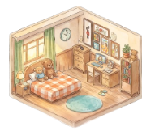

ハコニワ
・ 動くモック（スキャン／録音はダミー）
こんにちは、ゆいさん
ハコニワ
似顔
大切なモノを、思い出と一緒に。

そうた
{{ sotaCount }}
6さい
みお
{{ mioCount }}
3さい
あたらしい ハコニワ
家族のおへやを つくる
さいきん ふえた思い出
ぬいぐるみ
くまのプー
工作
ねんど
絵
かぞくの絵
ホーム
さがす
のこす
おもいで
せってい
大切なモノを、
思い出と一緒に。
子どもの宝物を3Dスキャンして、
ちいさなハコニワにのこそう。
写真やこえメモも いっしょに。
はじめる
すでに アカウントを おもちの方
おもいで
ぜんぶで {{ totalCount }}コ ・ 古いものから いまへ
思い出をさがす
すべて
そうた
みお
{{ t.year }}
{{ t.label }}
{{ t.child }}
{{ t.memo }}
ホーム
さがす
のこす
おもいで
せってい
せってい
似顔
ゆい
yui@example.com
かぞく
そうた
6さい
みお
3さい
＋
子どもを ついか
アプリ
スキャンの画質
たかい ›
バックアップ
おもいで通知
オンボーディングを もう一度みる
ホーム
さがす
のこす
おもいで
せってい
3Dスキャン
?
つみき
まわりを ぐるっと写してね
スキャン中の
ライブカメラ映像
（つみき）
{{ scanHint }}
キャプチャ 進行ど
{{ scanCount }}
やり直す
完了
思い出をのこす
スキップ
3Dモデル
スキャンできました！
名まえを つけてね
写真をそえる
写真1
写真2
ついか
こえメモ
{{ recLabel }}
おもいで メモ
たかくたかく つみあげて、くずして わらう。
まいにち あそんだ つみき。
｜
だれの？
そうた
いつ？
2024年 冬
ハコニワに しまう
{{ spaceTitle }}
{{ spaceSub }}
ハコニワに「{{ selName }}」をおきました
{{ spaceSub }}
＋
モノを タップすると 思い出がひらきます
{{ selPhoto }}
{{ selName }}
{{ selDate }}
{{ selMemo }}
こえメモ 0:12
写真 3まい
＋ スキャンして モノをふやす